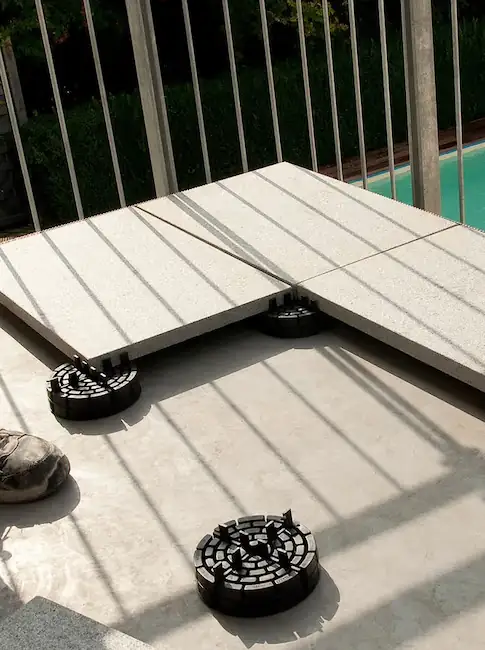
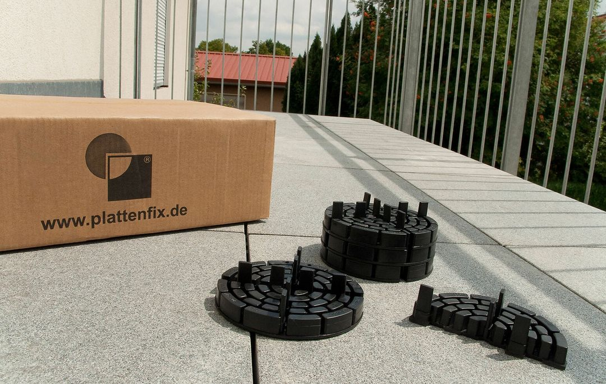
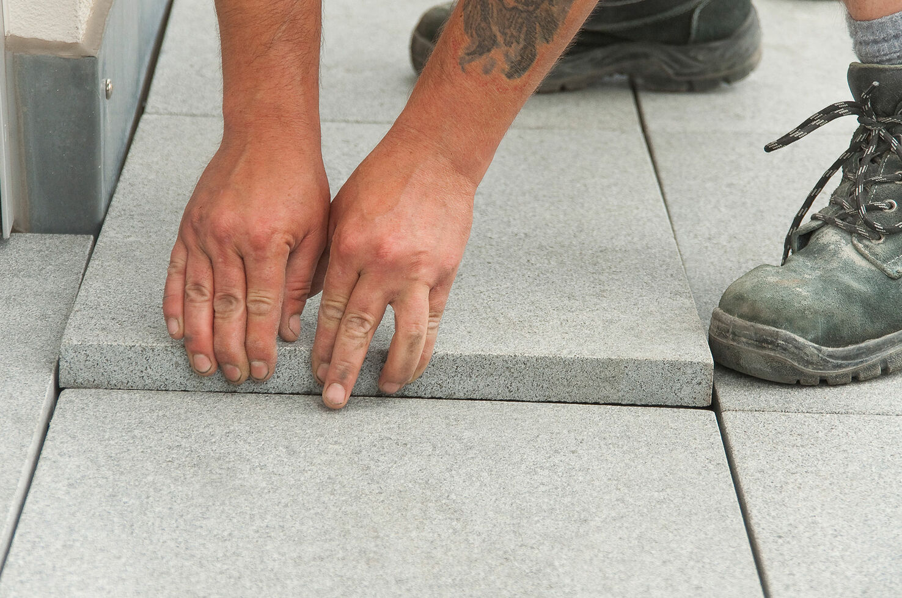
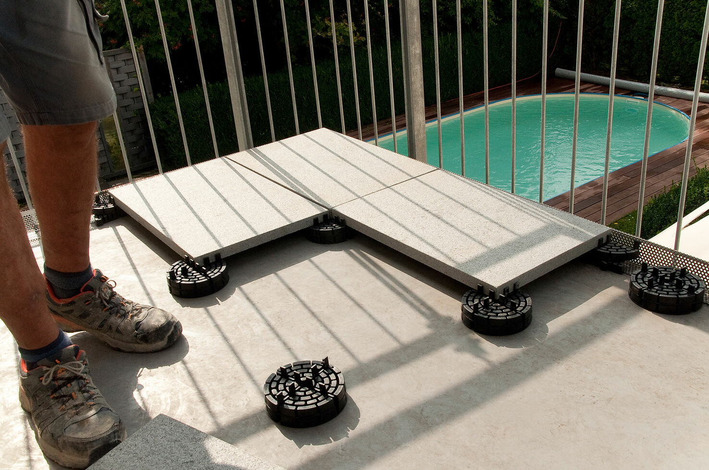
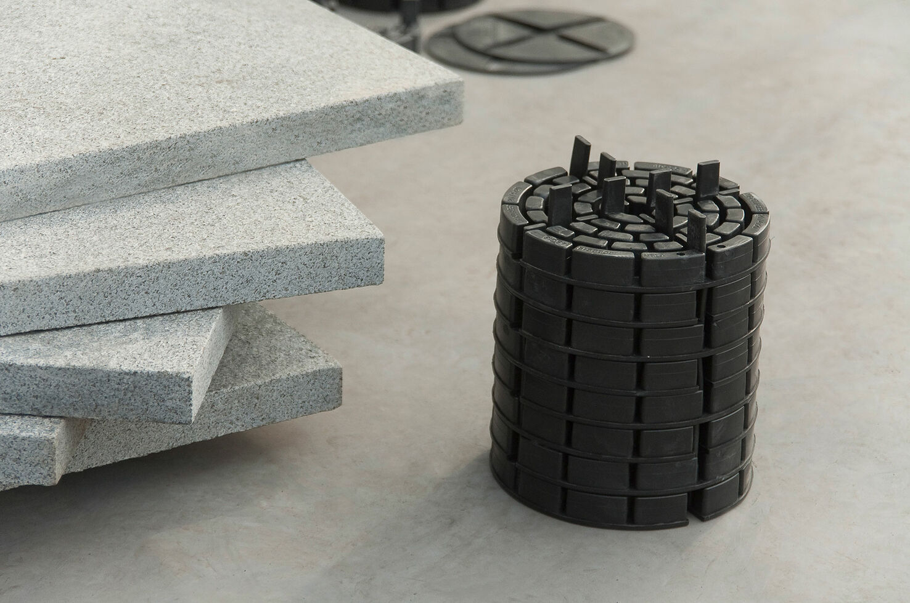

Die Firma Hans Kaim GmbH
Terrasse, Balkon, Flachdach oder im Garten




Terrasse, Balkon, Flachdach oder im Garten



Mit unseren Arbeitnehmern, ohne die der große Erfolg von PLATTENFIX nicht möglich gewesen wäre. Gleichzeitig zeigt dieser Erfolg, dass Wirtschaftlichkeit und eine arbeitnehmer- sowie umweltfreundliche Firmenphilosophie sich nicht gegenseitig ausschließen, sondern hervorragend ergänzen.
Sowie Fugenkreuze produziert PLATTENFIX seit Jahren auf hohem Qualitätsniveau. Alle Mitarbeiter des Familienbetriebs im unterfränkischen Oberschwarzach arbeiten zudem stetig daran, diesen hohen Standard noch weiter zu verbessern. Besonders wichtig ist der Austausch mit dem Fachhandel sowie mit Anwendern, Planern und Architekten: Ideen und Anregungen werden aus der Praxis aufgenommen und in neuen Ideen und Verbesserungen umgesetzt, Spezialwissen über die Produkte und deren Anwendung wird weitergegeben.
Geprüfter und zertifizierter (nach DIN EN ISO 9001) Produktion und schnellem, sicherem und pünktlichem Service ist Hans Kaim der Marktführer in Sachen Stelzlager aus recyceltem Kunststoff.
Das hat sich glücklicherweise inzwischen geändert. Was gleich geblieben ist, ist unser Anspruch – und die marktführende Position unserer Stelzlager in Sachen Nachhaltigkeit.



Zertifiziert nach DIN EN ISO 9001